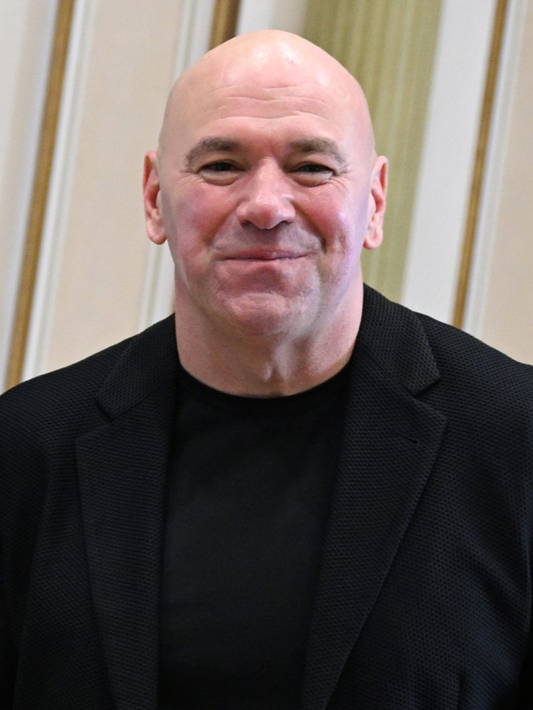

Хабиб Нурмагомедов отверг предложение Джейка Пола на 200 миллионов долларов за возвращение в ММА
Непобежденный экс-чемпион UFC в легком весе непреклонен: деньги не станут мотивацией для камбэка, точка в карьере поставлена окончательно.

Бывший чемпион UFC в легком весе Хабиб Нурмагомедов наотрез отказался от предложения блогера и промоутера Джейка Пола (Jake Paul), оцениваемого в 200 миллионов долларов за возвращение в профессиональные смешанные единоборства. В видеоролике, опубликованном в социальных сетях Пола в среду, 18 ноября 2026 года, непобежденный российский боец отклонил эту идею прямо на месте.
«Когда ты вернешься? За 200 миллионов долларов?» — поинтересовался Пол во время закулисной беседы, записанной после одного из турниров лиги PFL (Professional Fighters League).
«Зачем мне возвращаться? — ответил Нурмагомедов. — Вокруг меня полно ребят, они лучшие в мире. Доказывать мне нечего. Соперников нет, есть только деньги. Но для меня это не мотивация».

Пол парировал, заявив, что бой под эгидой его промоушена «навсегда изменит ММА» и создаст для атлетов принципиально иные финансовые условия, однако Хабиб остался непоколебим. В завершение шутливого диалога Пол в полушутливой манере попытался провести Нурмагомедову проход в ноги, но мастер борьбы легко пресек этот выпад.
Наследие 29-0, высеченное в камне
Нурмагомедов завершил профессиональную карьеру в октябре 2020 года на турнире UFC 254 в Абу-Даби, поймав Джастина Гейджи (Justin Gaethje) на удушающий прием «треугольник» во втором раунде. Эта победа довела его послужной список до идеальных 29 побед при нуле поражений. Вакантный титул чемпиона UFC в легком весе Хабиб завоевал в апреле 2018 года в поединке против Эла Яквинты (Al Iaquinta), а в октябре того же года возглавил исторический кард UFC 229 против Конора Макгрегора (Conor McGregor) — событие собрало рекордные для индустрии ММА 2,4 миллиона покупок платных трансляций (PPV).
После ухода из жизни его отца и бессменного тренера Абдулманапа Нурмагомедова в июле 2020 года Хабиб дал матери твердое обещание больше никогда не выходить в октагон без него в углу. В июле 2022 года россиянин был официально включен в Зал славы UFC в категории «Современная эпоха».

Вся концентрация — на воспитании чемпионов
Категорический отказ Нурмагомедова полностью созвучен его позиции в переговорах с главой UFC Даной Уайтом (Dana White), который 14 ноября в очередной раз констатировал: все попытки организовать триумфальное возвращение Хабиба потерпели крах.
Повесив перчатки на гвоздь, Хабиб всецело посвятил себя тренерской деятельности в зале AKA (American Kickboxing Academy). Он секундирует чемпиона в двух дивизионах Ислама Махачева и претендента на титул в легчайшем весе Умара Нурмагомедова. И пока Пол продолжает охоту за громкими именами после объединения активов Most Valuable Promotions и PFL, «Орел» дал четко понять: одни лишь деньги никогда не откроют перед ним дверь клетки.